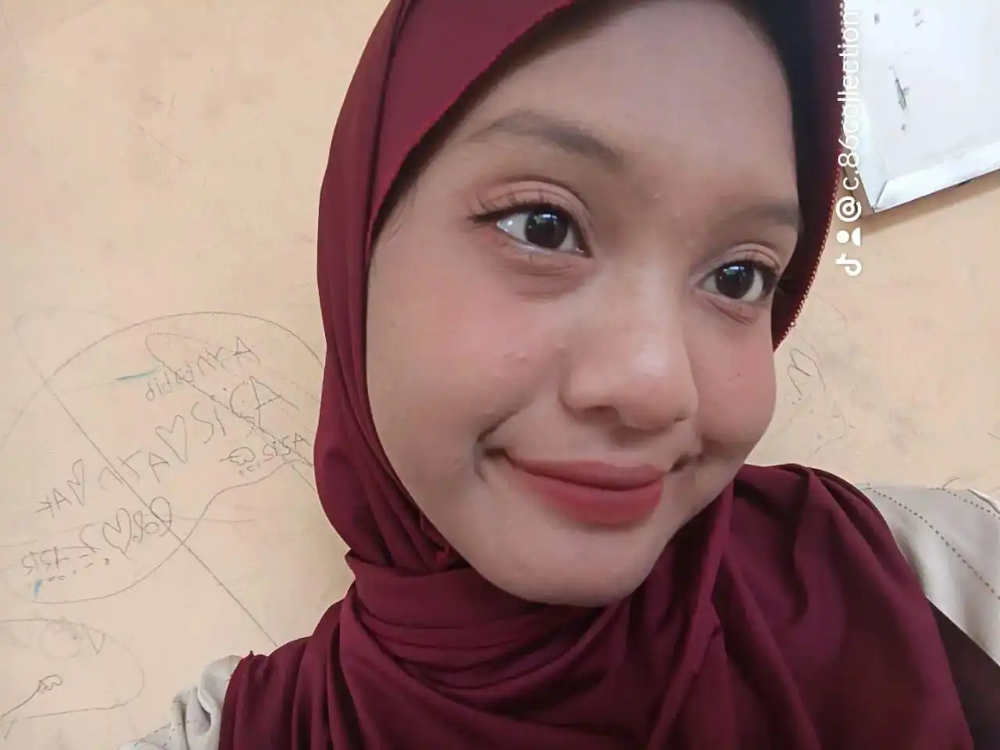

Web Profile Tanisa Salsabila

Biodata Pribadi
Kampus :
Global Institute
Nim : 1124160198
Nama : Tanisa Salsabila
Jurusan : Teknik Informatika
Semester : Dua
Matakuliah : Perancangan Web
List Tugas Perancangan Web
No
Tugas
Link Code
1
Membuat Web Portofolio
tugas 1
2
Mengatur Gambar
tugas 2
3
Link dalam html
tugas 3
4
Latihan table 1
tugas 4
5
Latihan table 2
tugas 5
Map Indonesia
Klik disini untuk lompat ke biodata (bagian atas)